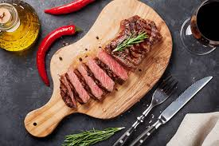

Resep Steak Daging Sapi

Bahan-Bahan
- 500 gr daging sapi
- Margarin untuk memanggang
Bahan pelengkap
- 1 wortel (iris dadu)
- 1 jagung pipil
- 5 buncis (iris)
- 3 buah kentang (goreng)
Bumbu peredam
- 2 bawang putih (haluskan)
- 2 sdm kecap asin
- 2 sdm kecap inggris
- 3 sdm minyak goreng
- 1 sdm saus tiram
- 1/2 sdt garam
- 1/2 sdt lada bubuk
Bumbu Saus
- 1/2 bawang bombay (cincang halus)
- 1 siung bawang putih (haluskan)
- 2 gelas air
- 2 sdm maizena
- 1/2 sdt garam
- 1/2 sdt lada
- 1/2 sdt gula pasir
- 4 sdm kecap manis
- 1 sdm kecap inggris
- 2 sdm daus tiram
- 3 sdm saus tomat
- 1 sdm margarin untuk menumis
Cara membuat
- Iris daging melebar tapi jangan terlalu tipis
- Campur semua bumbu peredam dan masukan daging. Diamkan selama 1 jam
- Siapkan semua bahan pelengkap, rebua wortel, buncis dan jagung. Dan untuk kentang digoreng
- Membuat saus: tumis bawang putih dan bawang bombay dengan margarin lalu masukan semua bumbu, dan terakhir masukan air dan larutan maizena
- Panggang daging dengan margarin sampai matang
- Steak daging sapi siap dinikmati selagi hangat. Lebih enak lagi kalau penyajiannya menggunakan hot plate